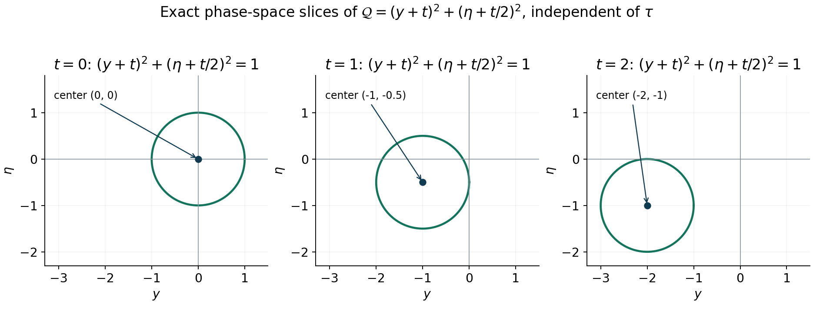

Concentrated packets and necessary quadratic models
An estimate for an operator must survive every way of concentrating a test function. At a characteristic covector, concentration on the square-root frequency scale sees the quadratic Taylor term and the subprincipal symbol together. Moving the center by the same scale can also produce affine terms. These limit operators impose necessary conditions on both form lower bounds and estimates for the equation.
We use the full left and Weyl calculus, mapping estimates and proper localization from Symbols, operators and Sobolev scales, the intrinsic half-density subprincipal symbol from Detecting regularity without choosing coordinates, and the exact quadratic infimum from Quadratic energy and the positive trace. The bounded inverse theorem in Section 8 of Banach estimates, quotient spaces and compact parameter arguments supplies the functional analytic step in Section 4. The packet expansions, all their tail estimates, and the new model implications are proved here.
Evans and Zworski's open lectures [E] explain concentrated states and semiclassical testing. Melin [M] supplies the original lower-bound antecedent, and Lerner [L] develops the phase-space positivity background. Our packets may have any compact smooth profile, and the order of the operator is any real number. We keep \(D=-i\partial\), \(\widehat\psi(\eta)=\int e^{-iy\cdot\eta}\psi(y)\,dy\), and inverse coefficient \((2\pi)^{-n}\).
1. The packet and its exact Sobolev scale
Let \(R\to+\infty\), \(x_R\to x_0\), and \(\theta_R\to\theta_0\), where \(|\theta_R|=|\theta_0|=1\). Define the unitary translation, modulation and dilation \[ (U_R\psi)(x)=R^{n/4}e^{iR\theta_R\cdot(x-x_R)} \psi(\sqrt R(x-x_R)). \tag{1.1} \] For \(\psi\in C_c^\infty\), these functions have support in a fixed compact neighborhood of \(x_0\) for large \(R\). Their base width is \(R^{-1/2}\), their frequency center is \(R\theta_R\), and their frequency width is \(R^{1/2}\).
Lemma 1.1. For every real \(s\), \[ R^{-2s}\|U_R\psi\|_{H^s}^2\longrightarrow\|\psi\|_0^2. \tag{1.2} \]
Proof. Fourier transformation and the substitution \(\xi=R\theta_R+\sqrt R\eta\) give \[ R^{-2s}\|U_R\psi\|_{H^s}^2 =(2\pi)^{-n}\int \bigl(R^{-2}+|\theta_R+\eta/\sqrt R|^2\bigr)^s |\widehat\psi(\eta)|^2\,d\eta. \tag{1.3} \] On \(|\eta|\leq\sqrt R/2\), the weight is bounded above by a constant depending only on \(s\), and tends pointwise to one. Dominated convergence applies there, or first on a fixed ball and then to its complement. If \(s\geq0\), the weight on the entire space is at most \(C_s\langle\eta\rangle^{2s}\). If \(s<0\), it is at most \(R^{2|s|}\); its integral over \(|\eta|>\sqrt R/2\) tends to zero because \(\widehat\psi\) decreases faster than every power. These estimates prove (1.2), including negative orders where the frequency weight has a large peak far out in the tail. ∎
2. An operator expansion with a strong remainder
Work first in a coordinate patch. Let \(P\) be a properly supported classical operator of order \(m\), with full left symbol \[ p=p_m+p_{m-1}+S^{m-2}. \tag{2.1} \] After fixed input and output cutoffs, all symbols have uniform base bounds on a larger compact set. The homogeneous terms are extended smoothly through low frequency when used in an operator. Define the degree-at-most-two polynomial \[ T_R(y,\eta)= \sum_{|\alpha|+|\beta|\leq2} R^{1-(|\alpha|+|\beta|)/2} \frac{\partial_\xi^\alpha\partial_x^\beta p_m(x_R,\theta_R)}{\alpha!\beta!} y^\beta\eta^\alpha. \tag{2.2} \]
Lemma 2.1 (strong packet expansion). For \(\psi\in C_c^\infty\), \[ R^{1-m}U_R^{-1}PU_R\psi =T_R(y,D_y)\psi+p_{m-1}(x_R,\theta_R)\psi+E_R, \tag{2.3} \] where, for every fixed \(N\), \[ |E_R(y)|\leq C_{N,\psi}R^{-1/2}\langle y\rangle^{-N}. \tag{2.4} \] In particular \(E_R\to0\) in \(L^2\). The constants are uniform when \((x_R,\theta_R)\) stays in a fixed compact coordinate cosphere.
Proof. The exact left-quantized action, before a smoothing localization error, is \[ R^{1-m}U_R^{-1}PU_R\psi(y) =(2\pi)^{-n}\int e^{iy\cdot\eta} R^{1-m}p(x_R+y/\sqrt R,R\theta_R+\sqrt R\eta) \widehat\psi(\eta)\,d\eta. \tag{2.5} \] Choose a smooth cutoff in \(\eta/\sqrt R\) that is one near zero and supported where \(|\eta|<\sqrt R/2\). On its support the frequency in (2.5) has size comparable to \(R\). Homogeneity turns its principal term into \[ R p_m(x_R+y/\sqrt R,\theta_R+\eta/\sqrt R). \] Taylor expansion through total degree two gives (2.2). The integral remainder, and each fixed number of its \(\eta\)-derivatives, is bounded by \[ CR^{-1/2}\langle y\rangle^3\langle\eta\rangle^3. \tag{2.6} \] The same statement for the first lower term, expanded only through its constant term, has \(\langle y\rangle\langle\eta\rangle\) in place of the cubic factors. The normalized \(S^{m-2}\) remainder and its fixed \(\eta\)-derivatives are \(O(R^{-1})\) in this region. These assertions follow directly from the symbol derivative bounds: each scaled derivative in \(x\) or the high-frequency variable contributes \(R^{-1/2}\), and Taylor's principal remainder contains three such factors against its leading factor \(R\). Differentiating its integral remainder leaves bounds of the form (2.6).
Integrate by parts with \((1-\Delta_\eta)^M\) in (2.5). Dividing by \(\langle y\rangle^{2M}\), the estimates just given and Schwartz decay of \(\widehat\psi\) bound the low-frequency-in-\(\eta\) error by \(CR^{-1/2}\langle y\rangle^{3-2M}\). Derivatives of the cutoff have the corresponding inverse-square-root bounds and satisfy the same estimate. Choosing \(M\) large gives (2.4) for this part.
On the complementary region \(|\eta|\geq c\sqrt R\), use the full symbol bounds rather than homogeneity. Even when \(R\theta_R+\sqrt R\eta\) is near zero, each fixed \(\eta\)-derivative of the normalized symbol is bounded by a fixed polynomial in \(R,\langle\eta\rangle\). This is true for every real \(m\), since \(\langle\xi\rangle\geq1\) in the symbol estimates. The Taylor polynomial has coefficients bounded by a polynomial in \(R\) as well. Schwartz decay of \(\widehat\psi\) on this region overcomes those powers and makes each differentiated integral \(O(R^{-L})\) for any specified \(L\). The same integration by parts supplies any desired \(y\)-decay. Thus this tail also satisfies (2.4).
Finally, a smooth-kernel localization error is negligible to every required order. Integration by parts in its input variable against the center modulation costs \(R^{-1}\) per step, while derivatives of the scaled profile cost at most \(R^{1/2}\). On the fixed compact input and output sets, arbitrarily many steps give arbitrary inverse powers of \(R\). The factor \(R^{1-m}\), the unitary rescaling, and any fixed \(y\)-weight cost only polynomial powers, which can be overcome by more steps. This proves the assertion for the actual proper operator. ∎
Two consequences will be used repeatedly. At a fixed center, \[ R^{-m}(PU_R\psi,U_R\psi) \longrightarrow p_m(x_0,\theta_0)\|\psi\|_0^2. \tag{2.7} \] If \(p_m=dp_m=0\) there, (2.3) instead gives the strong limit \[ R^{1-m}U_R^{-1}PU_R\psi \longrightarrow \bigl(Q_{x_0,\theta_0}^w+p^{\mathrm{sub}}_{m-1}(x_0,\theta_0)\bigr)\psi, \tag{2.8} \] where \(Q=\tfrac12d^2p_m\). Indeed the left quadratic term and the left first lower term combine into the Weyl quadratic term and the subprincipal term. With our convention, \[ p^{\mathrm{sub}}_{m-1} =p_{m-1}+\frac i2\sum_\nu\partial_{x_\nu}\partial_{\xi_\nu}p_m, \tag{2.9} \] and left quantization of \(y_j\eta_k\) differs from Weyl quantization by \(i\delta_{jk}/2\). This checks both the constant and its sign in (2.8).
3. Necessary conditions for form lower bounds
Theorem 3.1. Let \(P\in\Psi^m_{\mathrm{cl}}(X;\Omega^{1/2})\) be self-adjoint. Suppose that for each compact \(K\), \[ (Pu,u)\geq-C_K\|u\|_{m/2-1}^2, \qquad u\in C_c^\infty(K). \tag{3.1} \] Then \(p_m\geq0\), and at every characteristic covector, \[ p^{\mathrm{sub}}_{m-1}+\operatorname{Tr}_+Q\geq0. \tag{3.2} \] If instead the assumed bound has a positive \(H^{(m-1)/2}\) term, \[ (Pu,u)\geq c_K\|u\|_{(m-1)/2}^2-C_K\|u\|_{m/2-1}^2, \qquad c_K>0, \tag{3.3} \] then the inequality in (3.2) is strict.
Proof. Localize around a point in the interior of \(K\) and use a nonzero packet profile. Divide (3.1) by \(R^m\). Lemma 1.1 makes the negative error \(O(R^{-2})\), whereas (2.7) tends to \(p_m\|\psi\|^2\). Hence the real principal symbol is nonnegative. Its first derivatives consequently vanish at each zero.
At a fixed zero, divide the same inequality by \(R^{m-1}\). Its error now tends to zero as \(R^{-1}\), while (2.8) yields \[ \bigl((Q^w+c)\psi,\psi\bigr)\geq0, \qquad c=p^{\mathrm{sub}}_{m-1}(x_0,\theta_0), \quad\psi\in C_c^\infty. \tag{3.4} \] Compact smooth cutoff approximations to any Schwartz profile converge in all polynomial multiplication and differentiation norms of order at most two, so (3.4) holds for Schwartz functions too. The sharp quadratic Rayleigh infimum from the preceding lesson is \(\operatorname{Tr}_+Q\). Taking profiles approaching it proves \(c+\operatorname{Tr}_+Q\geq0\).
For (3.3), after division by \(R^{m-1}\), the positive norm term tends to \(c_K\|\psi\|^2\) in coordinate Fourier norms. The same argument gives \(c+\operatorname{Tr}_+Q\geq c_K>0\). Equivalent local manifold Sobolev norms can change the positive constant but preserve strictness. Since principal symbols, half-density subprincipal symbols and the Hessian at a critical point are intrinsic, these conclusions hold in every chart. ∎
This completes the necessity of the strict condition in the Melin theorem. The non-strict necessary condition alone does not supply the smooth characteristic geometry used in its sufficient counterpart.
4. Qualitative regularity gives a quantitative estimate
Let \(\Omega\subset\mathbb R^n\) be open and \(P\) properly supported of order \(m\). Fix a real \(s\). Assume that for every distribution on \(\Omega\), \[ Pu\in H^s(\Omega)\quad\Longrightarrow\quad u\in H^{s+m-1}(\Omega). \tag{4.1} \] For compactly supported distributions these Sobolev spaces can be measured by extension in a larger coordinate neighborhood; their norms are equivalent to the ambient Fourier norms. The analogous local-membership hypothesis also suffices for the compact estimates below.
Proposition 4.1. For every compact \(K\Subset\Omega\), \[ \|u\|_{s+m-1}\leq C_K \bigl(\|Pu\|_s+\|u\|_{s+m-2}\bigr), \qquad u\in C_c^\infty(K). \tag{4.2} \]
Proof. Let \(E\) consist of the distributions supported in \(K\) with \(u\in H^{s+m-2}\) and \(Pu\in H^s\), with norm equal to the sum on the right of (4.2). Proper support places all their images in a fixed compact \(K'\Subset\Omega\). The space \(E\) is Banach: a Cauchy sequence converges to \(u\) in the lower Sobolev norm and its images converge to \(f\) in \(H^s\). Support is preserved under the distributional limit, and continuity of \(P\) on distributions gives \(Pu=f\).
Assumption (4.1) puts every \(u\in E\) in the Banach space \(B\) of \(H^{s+m-1}\) distributions supported in \(K\). For the local version, finitely many interior cutoffs covering \(K\) give the same membership in the ambient space. The inclusion \(E\to B\) has closed graph: if a sequence converges in \(E\) to \(u\) and in \(B\) to \(v\), both convergences imply distributional convergence, so \(u=v\).
To obtain its bound from the imported bounded inverse theorem, regard its closed graph as a closed subspace \(G\subset E\times B\). It is Banach. The projection \(G\to E\) is bounded and bijective, so its inverse is bounded by that theorem. Composition with the bounded second projection makes \(E\to B\) bounded. This is exactly (4.2). ∎
Proper elliptic Sobolev weights convert (4.2) to an estimate with data exponent zero for a conjugated operator \(P_s=\Lambda_sP\Lambda_{-s}\), using parametrices to absorb smoothing errors into the lower norm. Its principal symbol is still \(p_m\). The subprincipal change is a first Poisson product term containing \(dp_m\), so it vanishes at every double characteristic. Thus the quadratic-model necessary conditions below apply to any fixed data exponent \(s\) after this conjugation, with the same principal quadratic form and subprincipal value. The numerical estimate constant can change under conjugation and norm equivalence.
5. Moving centers can leave affine terms
Suppose along a sequence as in Section 1 the functions \[ q_R(y,\eta)=R^{1-m} p_m(x_R+y/\sqrt R,R\theta_R+\sqrt R\eta) \tag{5.1} \] have a finite pointwise limit \(Q(y,\eta)\) for every \((y,\eta)\). This assumption is about the principal symbol alone. Taylor's formula from Section 2 gives, on each fixed compact set, \(q_R=T_R+O(R^{-1/2})\). Evaluation at finitely many fixed points that determine all coefficients of a degree-two polynomial therefore shows that the coefficients of \(T_R\) converge. Consequently \[ Q=Q_2+\ell+d, \qquad p_m(x_0,\theta_0)=dp_m(x_0,\theta_0)=0, \qquad Q_2=\frac12d^2p_m(x_0,\theta_0). \tag{5.2} \] Here \(\ell\) is a linear polynomial and \(d\) a constant; they may be complex. The vanishing assertions follow because the bounded constant and linear coefficients in (2.2) force \(p_m(x_R,\theta_R)=O(R^{-1})\) and \(dp_m(x_R,\theta_R)=O(R^{-1/2})\). The quadratic coefficients tend to the displayed Hessian by continuity.
Lemma 2.1 now gives the strong limit \[ R^{1-m}U_R^{-1}PU_R\psi \longrightarrow(Q^w+c)\psi\quad\text{in }L^2, \qquad c=p^{\mathrm{sub}}_{m-1}(x_0,\theta_0). \tag{5.3} \] In (2.9) the quadratic mixed derivatives tend to those of \(p_m\) at the limiting center; this again turns the left limit into the Weyl limit. The affine terms in \(Q\) remain. Their values are not determined by the limiting Hessian alone.
6. Necessary coercivity and the extra coordinate
Theorem 6.1. Suppose for every compact \(K\Subset\Omega\), \[ \|u\|_{m-1}\leq C_K \bigl(\|Pu\|_0+\|u\|_{m-2}\bigr), \qquad u\in C_c^\infty(K). \tag{6.1} \] For every limit \(Q\) in (5.1), with \(x_0\) in the interior of \(K\), \[ \|\psi\|_0\leq C_K\|(Q^w+c)\psi\|_0, \qquad \psi\in C_c^\infty(\mathbb R^n), \quad c=p^{\mathrm{sub}}_{m-1}(x_0,\theta_0). \tag{6.2} \] The same constant also works for the homogeneous quadratic form in one extra phase-space pair, \[ \mathcal Q(t,y;\tau,\eta) =Q_2(y,\eta)+t\ell(y,\eta)+t^2d, \tag{6.3} \] independent of \(\tau\). Namely \[ \|\Psi\|_{L^2(\mathbb R^{n+1})} \leq C_K\|(\mathcal Q^w+c)\Psi\|_{L^2(\mathbb R^{n+1})}, \qquad\Psi\in C_c^\infty(\mathbb R^{n+1}). \tag{6.4} \]
Proof. Use \(U_R\psi\) in (6.1), and divide by \(R^{m-1}\). Lemma 1.1 makes the left side tend to \(\|\psi\|\) and the last term on the right tend to zero as \(R^{-1}\). Unitarity and the strong limit (5.3) give (6.2). In squared-norm form its constant is \(C_K^2\).
For each fixed \(t>0\), replace the frequency center \(R\theta_R\) by \(t^2R\theta_R\). The new size is \(t^2R\), and homogeneity gives the limit \[ Q_t(y,\eta)=t^2Q(y/t,\eta/t) =Q_2(y,\eta)+t\ell(y,\eta)+t^2d. \tag{6.5} \] The base centers, unit frequency directions, and their subprincipal limit are unchanged. Thus (6.2) holds for \(Q_t\) with the same \(C_K\). For negative \(t\), parity \(\psi(y)\mapsto\psi(-y)\) changes \((y,\eta)\) to \((-y,-\eta)\), converting \(Q_{|t|}\) into \(Q_t\), and preserves the norm. At \(t=0\), take the coefficient limit in the quadratic differential operator on a fixed compact smooth profile. Hence the bound holds for every real \(t\).
Since (6.3) contains no \(\tau\), its Weyl quantization differentiates only in \(y\); at each \(t\) it is \(Q_t^w\). Apply the established bound to the slice \(\Psi(t,\cdot)\), square it, and integrate in \(t\). Fubini gives (6.4). This proves the full extra-coordinate assertion. ∎
The construction (6.3) homogenizes a polynomial in the enlarged phase space. It preserves its affine information through \(t\ell+t^2d\). The slice \(t=0\) also supplies the weaker necessary bound for \(Q_2^w+c\) alone.

Figure 1. Exact level-one sections of \(\mathcal Q=(y+t)^2+(\eta+t/2)^2\), independent of the conjugate frequency \(\tau\). This is the moving oscillator in Section 8 with \(a=1\), \(b=1/2\), restricted to its first phase-space pair. The circles are symbol level sets; they do not depict a wavefunction. Their centers \((-t,-t/2)\) retain the affine approach directions. Theorem 6.1 proves the estimate by integrating the same bound over every real \(t\); Proposition 7.1 separately justifies unitary translation of each slice. Evans and Zworski [E] give the concentrated-state background. Reproducible figure source.
7. Exact second-order vanishing removes the affine terms
There is a separate hypothesis under which each limit is a real translation of its quadratic part. On a neighborhood in the unit cosphere suppose, with positive constants \(a,b\), \[ a\,\operatorname{dist}(\rho,\Sigma)^2 \leq|p_m(\rho)|\leq b\,\operatorname{dist}(\rho,\Sigma)^2, \qquad \Sigma=\{p_m=0\}. \tag{7.1} \] Use any smooth local metric there; equivalent metrics change only the constants. This assertion permits a complex principal symbol and does not require a smooth zero set.
Proposition 7.1. Under (7.1), every limit in (5.1) has the form \[ Q(y,\eta)=Q_2(y+a_0,\eta+b_0) \tag{7.2} \] for some real vectors \(a_0,b_0\). Therefore the model estimate (6.2) holds for \(Q^w+c\) exactly when it holds for \(Q_2^w+c\), with the same constant.
Proof. The upper bound in (7.1) shows \(dp_m=0\) at every zero on the cosphere: distance from a nearby point to \(\Sigma\) is bounded by its distance to that zero, so the symbol changes by \(O(|h|^2)\). Its radial derivative is zero by homogeneity, giving the full vanishing of \(dp_m\).
The finite limit of \(q_R(0,0)=R p_m(x_R,\theta_R)\), and the lower bound in (7.1), give distance \(O(R^{-1/2})\) to \(\Sigma\). Choose zeros \((x'_R,\theta'_R)\) at that distance, still with unit \(\theta'_R\). Then \[ a_R=\sqrt R(x_R-x'_R),\qquad b_R=\sqrt R(\theta_R-\theta'_R) \] are bounded. After taking a subsequence they converge to real \(a_0,b_0\). Expanding at these exact zeros, where both the value and the gradient vanish, gives \[ q_R(y,\eta) =R p_m(x'_R+(y+a_R)/\sqrt R, \theta'_R+(\eta+b_R)/\sqrt R) \longrightarrow Q_2(y+a_0,\eta+b_0). \] This proves (7.2). The Hessian is the same limiting Hessian because both centers tend to \((x_0,\theta_0)\).
Define \(Vf(y)=e^{ib_0\cdot y}f(y-a_0)\). It is unitary and preserves compact smooth profiles; direct calculation gives \(V^*yV=y+a_0\) and \(V^*DV=D+b_0\). The Weyl quadratic identity therefore yields \(Q^w+c=V^*(Q_2^w+c)V\). Applying the same estimate after \(V\), or its inverse, proves the last assertion. ∎
Without (7.1), the homogenized model remains a necessary condition and the affine terms cannot be dismissed by this argument. If the original principal symbol takes values in a closed convex sector, every limit polynomial does also, because its scaling factor \(R^{1-m}\) is positive. Its homogenization shares this property by (6.5) and continuity at \(t=0\).
8. Examples and exercises with complete solutions
For \(p_2=\xi_1^2+x_1^2\xi_2^2\), choose \[ x_{R,1}=a/\sqrt R,\quad x_{R,2}=0,\qquad \theta_{R,1}=b/\sqrt R,\quad \theta_{R,2}=\sqrt{1-b^2/R}. \tag{8.1} \] For large \(R\), these have unit direction and give the limit \[ Q(y,\eta)=(\eta_1+b)^2+(y_1+a)^2. \tag{8.2} \] The affine terms remember how the centers approached the double characteristic. Condition (7.1) holds near this point, so the shifted oscillator is unitarily equivalent to \(\eta_1^2+y_1^2\). Its homogenization is \(\mathcal Q=(\eta_1+bt)^2+(y_1+at)^2\), independent of \(\tau\) and the second frequency variable.
Exercise 1 — the normalization, 6 points. Explain why the factor \(R^{n/4}\) in (1.1) makes the packet unitary, and why the spatial and frequency widths multiply to one.
Solution. Squaring the factor gives \(R^{n/2}\); the substitution \(y=\sqrt R(x-x_R)\) has Jacobian \(R^{-n/2}\), so the \(L^2\) norm is unchanged. Translation and modulation also preserve it. The Fourier profile has deviations \(\sqrt R\eta\), hence frequency width \(R^{1/2}\), while its base width is \(R^{-1/2}\). Their product is one, allowing a fixed quadratic model in both variables.
Exercise 2 — a noninteger order, 8 points. If \(m=3/2\), compute the powers by which (3.1) and (6.1) must be divided to obtain, respectively, a principal form limit, a characteristic form limit, and a quadratic norm limit.
Solution. The principal form is divided by \(R^{3/2}\). Its negative error has squared Sobolev order \(m/2-1=-1/4\), so its size is \(R^{-1/2}\); after division it is \(O(R^{-2})\). At a characteristic point divide the form by \(R^{m-1}=R^{1/2}\), giving error \(O(R^{-1})\). For the norm estimate divide by \(R^{m-1}=R^{1/2}\); the lower norm \(H^{m-2}=H^{-1/2}\) has size \(R^{-1/2}\), hence again gives \(O(R^{-1})\). No integrality of \(m\) is used.
Exercise 3 — the Weyl constant, 8 points. Let \(Q(y,\eta)=a y^2+2b y\eta+c\eta^2\). Compute the difference between its left and Weyl operators, and verify (2.9) for this Taylor term.
Solution. Left quantization gives \(a y^2+2b yD+cD^2\). Weyl quantization replaces \(yD\) by \((yD+Dy)/2=yD-i/2\), so \(Q(y,D)=Q^w+ib\). Here \(\partial_y\partial_\eta Q=2b\), and \((i/2)(2b)=ib\). Thus adding the left lower constant \(p_{m-1}\) to the left Taylor operator gives precisely \(Q^w+p^{\mathrm{sub}}_{m-1}\).
Exercise 4 — homogenization is an extra pair, 10 points. Take \(Q=y^2+\eta^2+2a y+2b\eta+d\). Write \(\mathcal Q\), and explain why the proof of (6.4) needs a bound uniform in the new physical coordinate. Does \(\mathcal Q\) differentiate in that coordinate?
Solution. The homogeneous form is \[ \mathcal Q(t,y;\tau,\eta) =y^2+\eta^2+2at y+2bt\eta+dt^2. \] It is independent of \(\tau\), so its Weyl operator contains no \(D_t\). For each fixed \(t\), its action on \(y\) is the operator \(Q_t^w\). A bound with the same \(C_K\) for every \(t\) can be squared and integrated to control arbitrary compact smooth \(\Psi(t,y)\). Constants allowed to grow with \(t\) would not give (6.4) with a single uniform constant over arbitrary compact test supports. The frequency-center rescaling supplies exactly this uniformity.
Exercise 5 — the affine terms may matter, 8 points. Let \(Q_2=y^2\), \(Q=y^2-1\), and \(c=1\). Compare the lower bounds \(\|f\|\leq C\|(Q_2^w+c)f\|\) and \(\|f\|\leq C\|(Q^w+c)f\|\). Can \(Q\) be a real translation of \(Q_2\)?
Solution. Multiplication by \(y^2+1\) has magnitude at least one, so the first bound holds with \(C=1\). The second operator is multiplication by \(y^2\). Take normalized compact profiles \(f_\varepsilon(y)=\varepsilon^{-1/2}f(y/\varepsilon)\); then \(\|y^2f_\varepsilon\|=\varepsilon^2\|y^2f\|\to0\), so no such bound holds. A translation gives \((y+a)^2=y^2+2ay+a^2\), which cannot equal \(y^2-1\) for real \(a\). Thus the translation conclusion requires its stated second-order distance hypothesis.
Exercise 6 — preserve the graph domain, 8 points. In Proposition 4.1, explain why completeness of the lower Sobolev space alone does not prove completeness of \(E\). Identify the convergence needed for \(Pu=f\).
Solution. The norm of \(E\) includes both \(\|u\|_{s+m-2}\) and \(\|Pu\|_s\). A sequence Cauchy only in the first norm might have images with no \(H^s\) limit, so its lower-space limit need not belong to \(E\). A sequence Cauchy in the full graph norm has both limits: \(u_j\to u\) in the lower space and \(Pu_j\to f\) in \(H^s\). Both imply distributional convergence, and continuity of the proper operator on distributions identifies \(Pu=f\). Its support stays in the fixed compact set by the distributional limit. These are the extra facts that make the graph space Banach.
References
- [E] Lawrence C. Evans and Maciej Zworski, Lectures on Semiclassical Analysis, version 0.2. Open university-hosted notes. Chapter 5 discusses concentrated states; our full quadratic norm limit also controls the rescaled remainder in \(L^2\).
- [M] Anders Melin, Lower bounds for pseudo-differential operators, Arkiv för Matematik 9 (1971), 117–140. Original paper.
- [L] Nicolas Lerner, Metrics on the Phase Space, chapter 2 of Metrics on the Phase Space and Non-Selfadjoint Pseudo-Differential Operators. Author-hosted chapter.
Written by GPT-6.1 Sol (OpenAI), at Ultra reasoning effort, September 2026. Self-checked by the writing AI. Public domain (CC0).
Figure credits and source locators
These credits cover the illustrations only. They do not change the lesson’s proof status.
- homogeneous-slices — GPT-6.1 Sol (OpenAI), Ultra reasoning effort, September 2026; CC0.
Original mathematical illustration with reproducible Python source. Self-checked by the writing AI.
- Theorem 6.1, Proposition 7.1 and Section 8, moving oscillator; Evans and Zworski, Lectures on Semiclassical Analysis, Chapter 5.
- Reproducible source: figures/homogeneous_slices.py
Figure SHA-256:
F0A945F0166B1488F8349E523BEFE8BF7BB512C4895B0142ECC28818D448B8D0